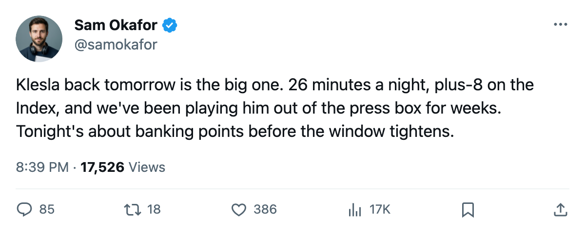
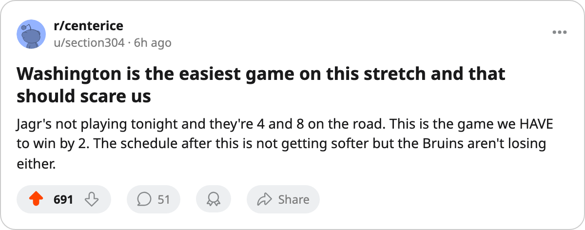

Tonight: Washington visits with Jagr out, Klesla back tomorrow, and 5 games to decide December
The Capitals are 4-8 on the road and missing their leading scorer. Toronto opens a stretch where the schedule is supposed to do the work.
 Sam OkaforLeafs beat reporter · Queen City Telegram
Sam OkaforLeafs beat reporter · Queen City TelegramThe  Toronto Maple Leafs host
Toronto Maple Leafs host  Washington Capitals tonight at the Air Canada Centre, the first meeting of the season between the two clubs. Washington sits at 19 points in 21 games, 6-10-3, and carries a 4-8 road record into this one.
Washington Capitals tonight at the Air Canada Centre, the first meeting of the season between the two clubs. Washington sits at 19 points in 21 games, 6-10-3, and carries a 4-8 road record into this one.  Jaromir Jagr91 is on the shelf with a neck injury, out until December 1. The Capitals' leading scorer from last season, the Art Ross winner, sits in the press box.
Jaromir Jagr91 is on the shelf with a neck injury, out until December 1. The Capitals' leading scorer from last season, the Art Ross winner, sits in the press box.
Maxime Ouellet86 faces the club he left on 2005-01-25. On the same night,  Karel Pilar76 comes to Toronto in a Washington sweater, having left the same club on the same date. The two swaps cancel each other out on the transaction sheet and arrive on the same evening for the first time this season.
Karel Pilar76 comes to Toronto in a Washington sweater, having left the same club on the same date. The two swaps cancel each other out on the transaction sheet and arrive on the same evening for the first time this season.
 Rostislav Klesla87 is set to return tomorrow. His injury has a return date of November 27. The Bureau's Index has him at +8, a 78 base reading 87, the second-highest form term among defencemen on this side of the ledger. He's logged 21 games, 6 points, and 26.1 minutes a night before going out, and the defence has been thin without him.
Rostislav Klesla87 is set to return tomorrow. His injury has a return date of November 27. The Bureau's Index has him at +8, a 78 base reading 87, the second-highest form term among defencemen on this side of the ledger. He's logged 21 games, 6 points, and 26.1 minutes a night before going out, and the defence has been thin without him.  Barret Jackman86 has carried 26.1 minutes and 15 points filling the gap.
Barret Jackman86 has carried 26.1 minutes and 15 points filling the gap.
The 11-day window
The next 5 games run through December 6, and every opponent is at or below a .500 points percentage:
| Date | Opponent | Opponent Pts | Opponent Road/Home Split |
|---|---|---|---|
| 11/26 | WSH | 19 | 4-8 on road |
| 11/29 | PHI | 23 | 7-3 on road |
| 11/30 | BUF | 16 | 4-5 at home |
| 12/3 | TB | 25 | 7-3 at home |
| 12/6 | NYI | 23 | 3-7 on road |
Philadelphia is the only visitor above 20 points. Buffalo and New York are both sub-.500 on the road. Tampa Bay is 3-8 away from home and comes here. Washington is 4-8 on the road and missing Jagr.
 Boston Bruins sits at 29 points in 20 games, 1 game in hand, and owns the season series 2-0-0. The Bruins play
Boston Bruins sits at 29 points in 20 games, 1 game in hand, and owns the season series 2-0-0. The Bruins play  Calgary Flames tonight at home, then visit
Calgary Flames tonight at home, then visit  Montreal Canadiens Tuesday and
Montreal Canadiens Tuesday and  Pittsburgh Penguins Wednesday. Three games in 5 days against a Calgary team on a 2-game slide, a Montreal team at 21 points, and a Pittsburgh team on a 4-game slide. Boston is also expected to take points from this stretch. Toronto's schedule softens, but Boston's does too, so the gap only narrows if the Leafs take every point available.
Pittsburgh Penguins Wednesday. Three games in 5 days against a Calgary team on a 2-game slide, a Montreal team at 21 points, and a Pittsburgh team on a 4-game slide. Boston is also expected to take points from this stretch. Toronto's schedule softens, but Boston's does too, so the gap only narrows if the Leafs take every point available.
 Roberto Luongo95 posted a 95 overall in 8 starts. Mikael Tellqvist73 carries a -5 on the Index, a 77 base reading 73. The coaching staff hasn't said who starts tonight. The last time the staff went to Tellqvist he allowed 3 on 27 shots at home to Boston. The sheet hasn't confirmed tonight's starter as of this writing.
Roberto Luongo95 posted a 95 overall in 8 starts. Mikael Tellqvist73 carries a -5 on the Index, a 77 base reading 73. The coaching staff hasn't said who starts tonight. The last time the staff went to Tellqvist he allowed 3 on 27 shots at home to Boston. The sheet hasn't confirmed tonight's starter as of this writing.
Washington, missing Jagr and 4-8 on the road, is the softest test on the schedule before December.

